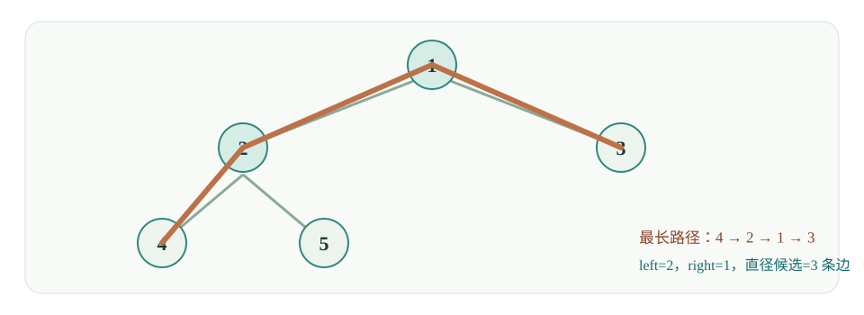
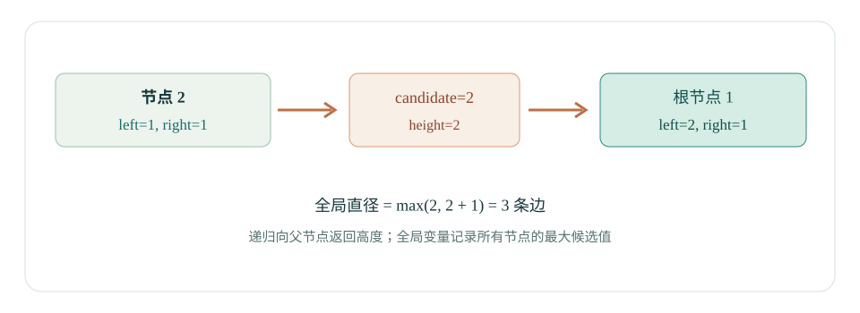
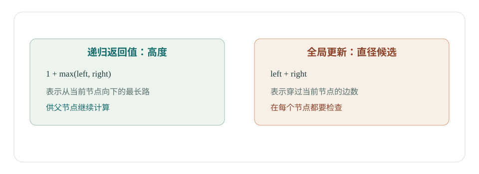

LeetCode 543 · 二叉树的直径
递归向上返回高度，同时在每个节点更新最长路径。
简单 Easy16 分钟Postorder / Tree DP01 · 直径是边数，不一定经过根节点
二叉树的直径是任意两个节点之间最长路径的边数。最长路径可能经过根节点，也可能完全位于某个子树内部。

父节点需要知道“从当前节点向下最多还能走多远”，这叫高度；题目要的是“整棵树任意两点之间的最长路径”，这叫直径。它们相关，但不是同一个返回值。
02 · 用子树高度计算经过当前节点的路径
定义 height(node) 为从 node 向下到最远叶节点的节点数：空树高度 0，叶节点高度 1。设左、右子树高度分别为 L 和 R。
- 经过当前节点、连接左右两侧最深节点的路径长度（边数）是 L + R。
- 当前节点向父节点返回的高度是 1 + max(L,R)。
- 在每个节点都用 L + R 更新全局最大直径，而不是只检查根节点。
计算当前节点时，必须先知道左右子树高度。因此先处理左子树、再处理右子树，最后汇总当前节点。递归返回高度；全局变量记录最大直径。
03 · 后序遍历如何汇总？
对 [1,2,3,4,5]，节点 2 的左右子树高度都是 1，所以经过节点 2 的路径有 2 条边；根节点 1 的左右高度是 2 和 1，所以更新为 3。

后序遍历先处理叶节点 4 和 5。叶节点高度为 1；它们的左右高度都是 0，因此各自的直径候选为 0。
height(4)=1 · height(5)=1 · best=0
04 · 为什么检查所有节点就够了？
任取树中两个节点 u、v，它们之间的唯一路径有一个离根最近的节点 x，也就是它们的最近公共祖先。若 u、v 分别位于 x 的左右子树，那么路径长度等于从 x 左侧向下的边数加右侧向下的边数，正好不超过 height(left)+height(right)。若其中一个端点就是 x，则另一侧高度也被这个公式覆盖。
因此，任意一条路径都能归属到某个最高点 x，并被该节点计算的 L+R 覆盖。反过来，每个 L+R 都对应一条真实路径。遍历所有节点并取最大值，得到的就是树的直径。
05 · Python：显式后序栈，避免递归深度限制
递归核心很简洁：先求左右高度，用 L+R 更新 diameter，再返回 1+max(L,R)。但极端退化树可能很深。下面用显式栈模拟后序遍历，并用节点身份保存已经计算好的高度。
class Solution:
def diameterOfBinaryTree(self, root) -> int:
if root is None:
return 0
stack = [(root, False)]
heights = {}
diameter = 0
while stack:
node, expanded = stack.pop()
if not expanded:
stack.append((node, True))
if node.right is not None:
stack.append((node.right, False))
if node.left is not None:
stack.append((node.left, False))
continue
left_height = heights.pop(id(node.left), 0) if node.left else 0
right_height = heights.pop(id(node.right), 0) if node.right else 0
diameter = max(diameter, left_height + right_height)
heights[id(node)] = 1 + max(left_height, right_height)
return diameter
递归版的高度关系与这里完全相同。显式栈先把节点标记为“待汇总”，再将孩子压栈；只有孩子都处理完后，才计算当前节点。
| 维度 | 结论 | 说明 |
|---|---|---|
| 时间 | O(n) | 每个节点进入栈两种状态各一次，常数次处理。 |
| 辅助空间 | O(n) 上界 | 显式遍历栈与尚未汇总的高度映射；递归版本的调用栈是 O(h)。 |
| 高度单位 | 节点数 | 空树 0、叶节点 1。 |
| 直径单位 | 边数 | 经过当前节点的候选为 left_height + right_height。 |
06 · 最容易混淆：向父节点返回什么？

- 不要把 1+L+R 当作高度；它把左右两条分支拼在一起，不能作为父节点的一条向下路径。
- 不要只在根节点计算 L+R；最长路径可能完全位于某个子树内部。
- 高度按节点数，直径按边数。叶节点的直径候选是 0，不是 1。